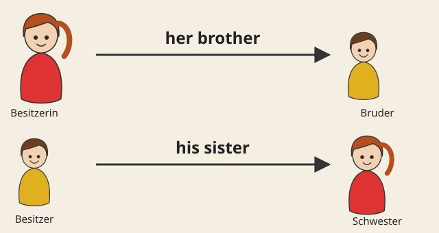

Wessen Ding? his, her, its
Mit einem KI-Tutor lernen
Ein KI-Tutor erklärt dir diese Seite und hilft dir bei den Übungen. Wähl deinen Assistenten:
Mit Claude öffnen Mit ChatGPT öffnen Mit Mistral Vibe öffnen
Du nutzt dein eigenes Konto beim Anbieter. Der Assistent ist kein Angebot von lernapps.net: lernapps liefert nur Inhalte und Übungen. Die Wahl gilt für alle Seiten, nur auf diesem Gerät.
Ellie, Peter und die Katze

Ellie (rote Jacke) und Peter (gelbe Jacke) mit der Katze der Familie Parker.
Quelle: eigene Zeichnung. Lizenz: CC-BY-4.0.Mrs Parker, Ellies und Peters Mutter und Sophies Gastmutter, holt die Kinder ab. Sophie sagt: „Ellie can see her jacket.“ Das heißt: „Ellie kann ihre Jacke sehen.“ brother heißt „Bruder“, sister „Schwester“, cat „Katze“, and „und“ und the „der, die, das“.
Das kannst du danach: Du sagst auf Englisch, wem etwas gehört, auch mit his, her und its, und füllst die ganze Pronomen-Tabelle aus.
Übung
Lösung
Ellies Jacke richtige Antwort
her sagt, dass die Jacke einem Mädchen gehört. Das Mädchen im Satz ist Ellie.
Peters Jacke
Für Peters Jacke würde Sophie his sagen, denn Peter ist ein Junge.
Sophies Jacke
Wenn Sophie ihre eigene Jacke meint, sagt sie my.
her meint die Jacke einer Frau oder eines Mädchens, hier Ellies.
Mehr dazu:
Der Besitzer bestimmt das Wort
Bei he, she und it brauchst du his, her und its. his heißt „sein“, her „ihr“ und its „sein“ für ein Ding oder Tier. Das Wort richtet sich nach dem Besitzer, nicht nach dem Ding. Über Ellie sagt man „her brother“, obwohl Peter ein Junge ist. Über Peter sagt man „his sister“, obwohl Ellie ein Mädchen ist.

Der Pfeil geht vom Besitzer zum Ding. Das Wort über dem Pfeil richtet sich nach dem Besitzer, nicht nach dem Ding.
Quelle: eigene Zeichnung. Lizenz: CC-BY-4.0.| Person | Wer tut es? | Wen trifft es? | Wessen Ding? |
|---|---|---|---|
| ich | I | me | my |
| du / ihr | you | you | your |
| er | he | him | his |
| sie (ein Mädchen) | she | her | her |
| es | it | it | its |
| wir | we | us | our |
| sie (mehrere) | they | them | their |
Merke
his gehört einem Jungen oder Mann, her einem Mädchen oder einer Frau, its einem Ding oder Tier: The cat can see its ball. Dein Blick geht zum Besitzer, nicht zum Ding. her steht in der zweiten und in der dritten Spalte. its schreibst du ohne Apostroph: it's ist die Kurzform von „it is“.
Übung
Übung
Wähle das Wort. Der Besitzer bestimmt es.
- Ellie kann ihre Jacke sehen. → Ellie can see … jacket.
- Peter kann seine Jacke sehen. → Peter can see … jacket.
- Peter kann seine Schwester sehen. → Peter can see … sister.
- Ellie kann ihren Bruder sehen. → Ellie can see … brother.
- Die Katze kann ihren Ball sehen. (Die Katze zählt als Tier, also it.) → The cat can see … ball.
Lösung
- Ellie can see her jacket.
- Peter can see his jacket.
- Peter can see his sister.
- Ellie can see her brother.
- The cat can see its ball.
Übung
Lösung
Peter can see his sister. richtige Antwort
Der Besitzer ist Peter, ein Junge, also his.
Peter can see her sister.
her würde zu einem Mädchen als Besitzerin passen. Besitzer ist aber Peter.
Peter can see its sister.
its ist für Dinge und Tiere, nicht für eine Person.
Der Besitzer bestimmt das Wort. Peter ist ein Junge, also his.
Mehr dazu:
Übung
Schreibe den Satz auf Englisch.
- Ellie kann ihren Bruder sehen.
- Peter kann seine Jacke sehen.
- Die Katze kann ihren Ball sehen.
- Ich kann meinen Bruder sehen.
Lösung
- Ellie can see her brother.
- Peter can see his jacket.
- The cat can see its ball.
- I can see my brother.
Übung
Lösung
Richtige Antwort: Die Aussage stimmt nicht.
Der Besitzer ist Peter, ein Junge, also his sister.
Mehr dazu:
Übung
Wähle alle Wörter. Jedes Wort gehört in eine andere Spalte der Tabelle.
- Sie (Ellie) kann ihn (Peter) und seine Jacke sehen. → … can see … and … jacket.
- Peter und Amir können uns und unseren Ball sehen. → … can see … and … ball.
Lösung
- She can see him and his jacket.
- They can see us and our ball.
Übung
Hör zu und schreibe, was du hörst.
- KI
- KI
- KI
Lösung
- Ellie can see her jacket.
- Peter can see his sister.
- The cat can see its ball.
Übung
Ergänze die ganze Tabelle ohne nachzusehen.
| Person | Wer tut es? | Wen trifft es? | Wessen Ding? |
|---|---|---|---|
| ich | I | … | … |
| du / ihr | you | … | … |
| er | … | … | … |
| sie (ein Mädchen) | … | … | … |
| es | … | … | … |
| wir | we | … | … |
| sie (mehrere) | … | … | … |
Lösung
- ich · I · me · my
- du / ihr · you · you · your
- er · he · him · his
- sie (ein Mädchen) · she · her · her
- es · it · it · its
- wir · we · us · our
- sie (mehrere) · they · them · their
Selbst sagen und schreiben
Übung
Hör zu, sprich nach und nimm dich auf. Vergleiche dann mit dem Original.
Tipp
Hör das Beispiel zuerst. Sprich dann langsam nach und vergleiche deine Aufnahme mit dem Original.
- Ellie can see her jacket.KI
- Peter can see his sister.KI
- She can see him and his jacket.KI
Zum Aufnehmen braucht diese Übung JavaScript. Die Beispiele kannst du auch ohne anhören.
Lösung
- Ellie can see her jacket.
- Peter can see his sister.
- She can see him and his jacket.
Offene Aufgabe
Schreibe zwei kurze Sätze über Ellie und Peter. Benutze can see. In jedem Satz sagt ein Pronomen, wem etwas gehört.
Eine gute Antwort enthält:
Lösung
Ellie can see her brother. Peter can see his jacket.
Rückblick und wie es weitergeht
Das Poster hat jetzt drei Spalten mit den Fragen Wer tut es? Wen trifft es? Wessen Ding? Du weißt: Wer etwas tut, sagt I, he, she, we, they. Wen es trifft, sagt me, him, her, us, them. Wem etwas gehört, sagt my, your, his, her, its, our, their. Damit kannst du jetzt für jede Person sagen, wer etwas tut, wen es trifft und wem etwas gehört.